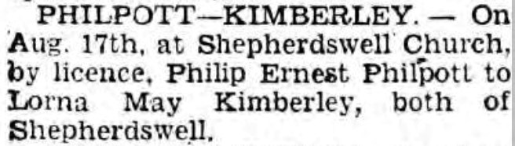
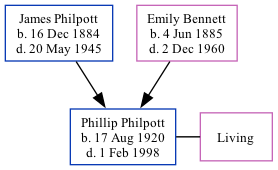

Phillip Ernest Philpott 1920 - 1998
[ Home ] | [ Calendar ] | [ Surnames Index ] | [ Family History ]The son of James Philpott (a seaman) and Emily Bennett (a servant), Phillip Philpott, the second cousin twice-removed on the mother's side of Nigel Horne, was born in Shepherdswell, Kent, England on Aug 17, 19201,2,3. He married Lorna Kimberley at Shepherdswell Church in Shepherdswell on Aug 17, 19454.
Throughout his life, he lived at Rose Bank, Sibertswold, Kent, England on Jun 19, 19211 and on Sep 29, 19392. 1939 Civilian Role: Air Raid Precautions in 1939.
He died on Feb 1, 1998 in Dover, Kent3.
Parents
- James Henry was born on Dec 16, 1884
- Emily was born on Jun 4, 1885
Citations
- 1921 Census Of England & Wales - Findmypast (was the son of the head of the household)
- 1939 Register - Findmypast (was the son of the head of the household)
- England & Wales deaths 1837-2007 - Findmypast
- England & Wales marriages 1837-2008 - Findmypast
Media
Dover Express - 31 Aug 1945

England & Wales births 1837-2006 - BMD/B/1920/3/AZ/001260/132
England & Wales deaths 1837-2007 - BMD/D/1998/2/82723813
England & Wales marriages 1837-2008 - BMD/M/1945/3/AZ/001311/084
1939 Register - TNA/R39/1814/1814C/021/35
1921 Census of England & Wales - GBC/1921/RG15/04518/0083/03
Family Tree
Generated by Ged2Site. Last updated on Jul 20, 2025